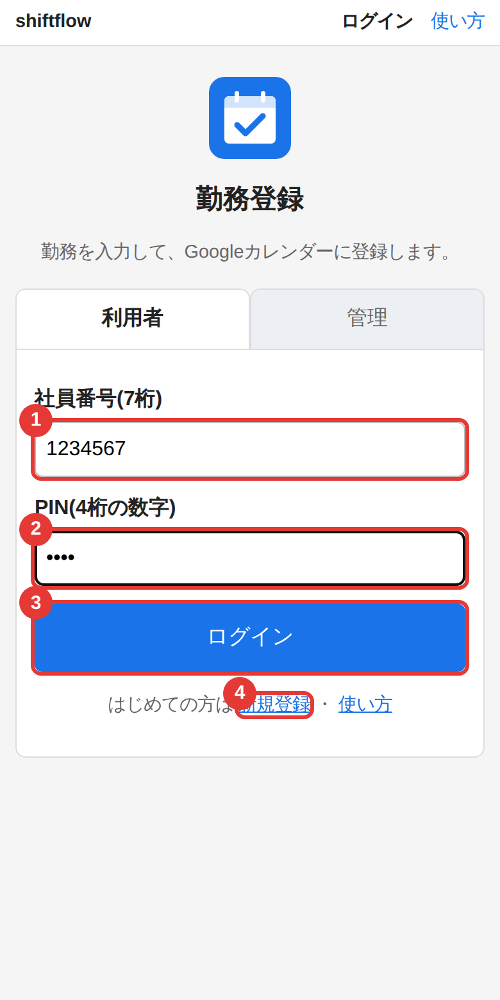
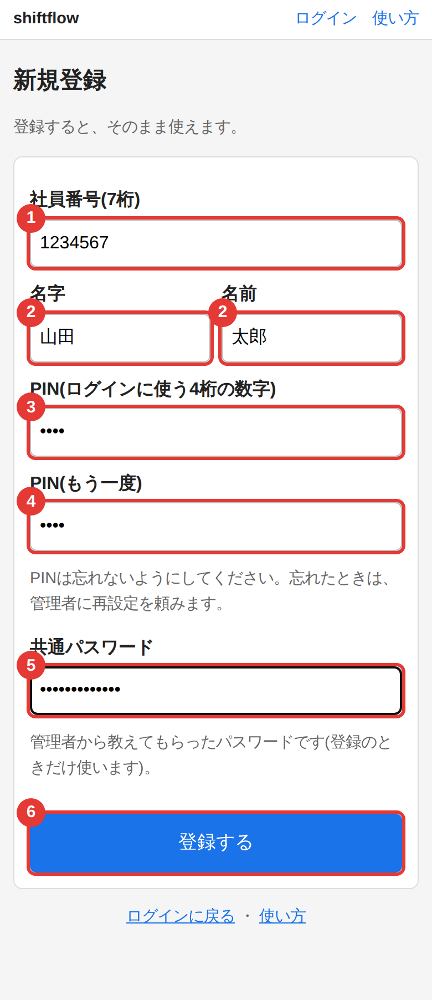
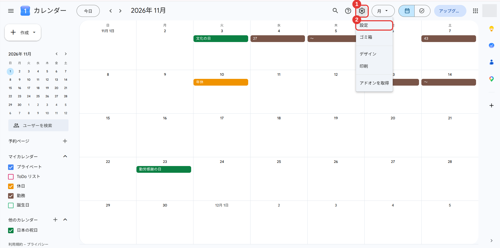
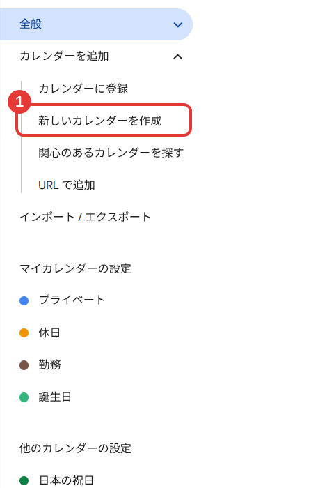
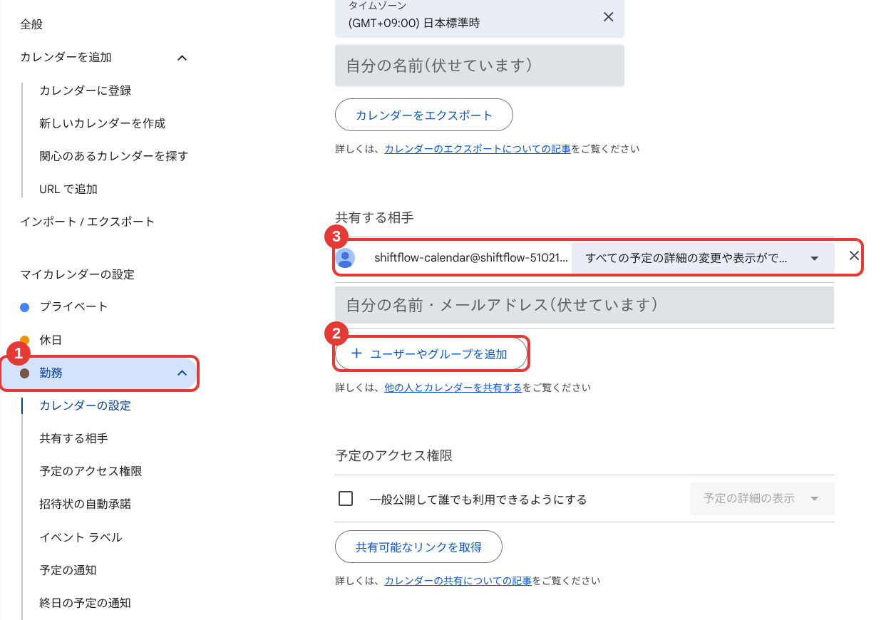
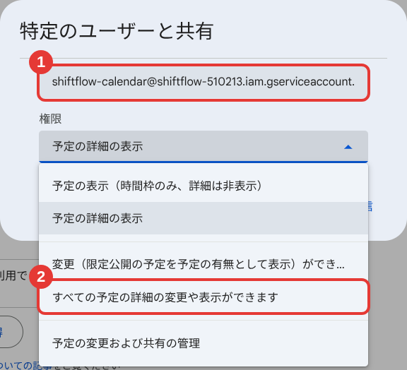
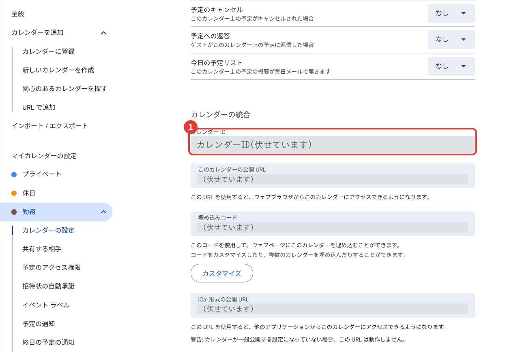
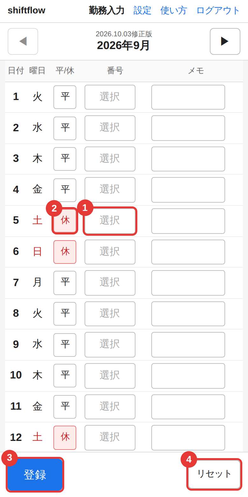
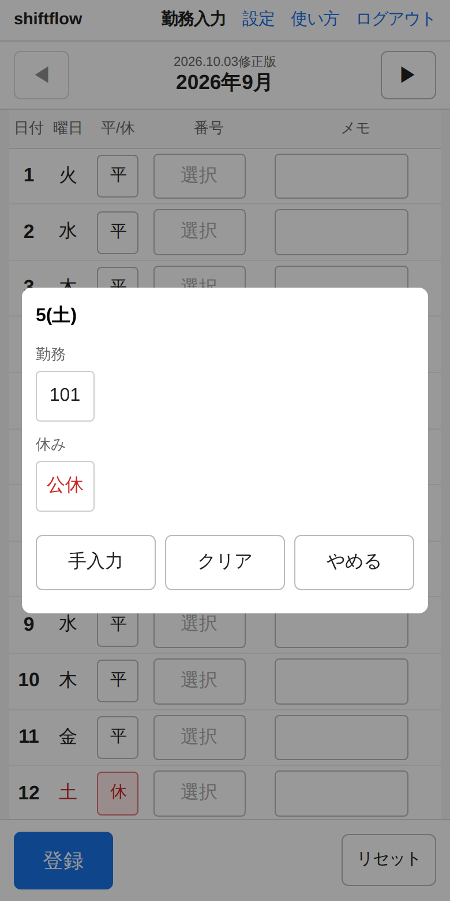
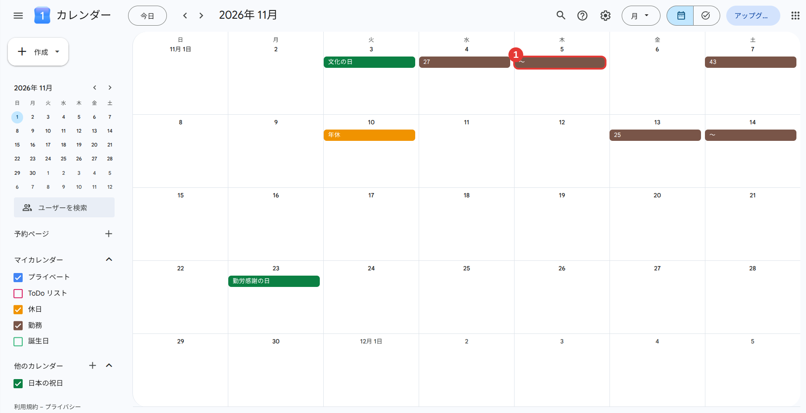

勤務登録
使い方(利用者向け)
https://fast4213-max.github.io/shiftflow/
勤務の番号を入れて「登録」を押すと、
あなたの Googleカレンダーに予定が入ります。
2026.10.03修正版
はじめに: 全体の流れ
最初の1回だけ設定をします(15分ほど)。設定が終われば、あとは勤務を入力して「登録」を押すだけです。
1新規登録する
社員番号・名前・PIN・共通パスワード(管理者から聞く)
2Googleカレンダーで「勤務用」のカレンダーを新しく作る
PC のブラウザで行います
3そのカレンダーを、アプリの登録用アドレスと共有する
権限は「すべての予定の詳細の変更や表示ができます」
4アプリの設定画面で、区所とカレンダーIDを入れる
「保存して接続テスト」で「接続できました」と出れば完了
5勤務入力の画面で、番号を選んで「登録」
これを毎月くり返します
全部で、この3つを使います
・このアプリ(スマホでもPCでも)
・PC の Googleカレンダー(手順2〜3と、カレンダーIDの確認だけ)
・管理者から聞く共通パスワード(登録のときだけ)
登録される予定
| 種類 | 入るカレンダー | タイトル | メモ |
|---|
| 泊 | 勤務用 | 番号 | 出勤時間(2行目に泊地) |
| 日勤 | 勤務用 | 番号 | 出勤〜退勤 |
| 出勤を2件で登録(設定で選んだ人) | 勤務用 | 番号の予定と、時間の予定(出勤〜退勤)の2つ | 番号の予定のメモは今まで通り |
| 非番(泊の翌日) | 勤務用 | 〜 | 退勤時間 |
| 休日(公休・年休など) | 休日用(なければ登録しない) | 特休・公休・年休など | なし |
予定はすべて終日です。土日・祝日・年末年始(12/30〜1/3)は自動で「休」になります。
1. 新規登録とログイン
新規登録(最初の1回)
- 最初の画面の「新規登録」を押す(右の画面の 4)
- 次の画面で入力して「登録する」を押す
| 入れるもの |
|---|
| 1 | 社員番号(7桁) |
| 2 | 名字と名前 |
| 3 4 | PIN(4桁の数字)を2回。忘れないように |
| 5 | 共通パスワード(管理者から聞く。登録のときだけ使う) |
登録できたら、そのまま設定画面に進みます。
ログイン(次回から)
最初の画面の「利用者」で、1 社員番号と 2 PIN を入れ、3 「ログイン」を押します。
PINを5回続けて間違えると、その社員番号は15分ほど使えなくなります(時間をおけば戻ります)。
PINを忘れたとき
管理者に頼むと、仮のPINを教えてもらえます。それでログインして、設定画面の「PINを変える」で好きなPINに変えてください。

ログインの画面

新規登録の画面
2. Googleカレンダーで、勤務用のカレンダーを作る
このアプリ専用のカレンダーを、新しく作ります。自分のメインのカレンダーは使えません。手で入れている予定とも分けられるので、安心です。
PC のブラウザで行います。カレンダーの作成と共有は、スマホのアプリではできません。スマホしかない人は、スマホのブラウザで calendar.google.com を開き、「PC版サイト」(iPhone は「デスクトップ用ウェブサイトを表示」)に切り替えて、拡大しながら操作します。
- PC のブラウザで https://calendar.google.com を開く
- 右上の歯車(1)を押し、「設定」(2)を選ぶ
- 左のメニューの「カレンダーを追加」を開き、「新しいカレンダーを作成」(1)を選ぶ(下の図)
- 名前(例: 勤務)を入れて「カレンダーを作成」
休みの予定(公休・年休など)も分けて入れたい人は、同じ方法で「休日」のカレンダーも作ります。休日用はなくてもかまいません。
左の「他のカレンダー」の横の「＋」からも、同じ「新しいカレンダーを作成」に進めます。

歯車 → 設定

カレンダーを追加 → 新しいカレンダーを作成
3. カレンダーを、アプリの登録用アドレスと共有する
作ったカレンダー(勤務用。休日用も作った人は、それも)を、アプリの登録用アドレスと共有します。
登録用アドレスの見つけ方: アプリの「設定」画面の、「2. カレンダーを共有する」の下の欄に表示されています。横の「
コピー」を押してコピーします(手で打つと間違えやすいので、コピーがおすすめです)。
shiftflow-…@…iam.gserviceaccount.com← こんな形のアドレスです
休日用のカレンダーも作った人は、同じ手順(A〜B)をもう1回行います。
手順A: 共有の画面を開く
- 手順2の「設定」の画面で、左のメニューの「マイカレンダーの設定」の中の「勤務」(図の 1)を押す
- 右の「共有する相手」の欄が共有の画面です(カレンダーの左の「︙」→「設定と共有」からも開けます)
手順B: アドレスを追加して、権限を選ぶ
- 「＋ ユーザーやグループを追加」(図の 2)を押す
- 出てきた画面の上の欄に、コピーした登録用アドレスを貼り付ける(右の図の 1)
- 権限の一覧から、上から4番目の「すべての予定の詳細の変更や表示ができます」(右の図の 2)を選ぶ
- 「送信」を押す(一覧を開いていると隠れています。選ぶと閉じて、下に出ます)
- 共有できると、「共有する相手」の欄に登録用アドレスが増え(図の 3)、権限が「すべての予定の詳細の変更や表示が…」になっています

共有する相手(登録用アドレスを追加したあとの状態)

アドレスと権限を選ぶ画面
権限はここだけ間違えないでください。
・上の2つ(「予定の表示…」「予定の詳細の表示」)では、アプリが書き込めません。
・一番下の「予定の変更および共有の管理」は、強すぎるので選ばなくて大丈夫です。
・画面によっては「予定の変更権限」などの名前のこともあります。そのときは、予定を変更できるもので、共有の管理が付いていないものを選びます。
4. カレンダーIDを調べる
手順3と同じ「勤務」の設定の画面を、下にスクロールします。
- 「カレンダーの統合」という見出しを探す
- その中の「カレンダー ID」(1)の文字列を、全部コピーする

「カレンダーの統合」の「カレンダー ID」(画像では、IDと下のURLを伏せています)
| 合っているID | 使えないもの |
|---|
| 英数字の長い文字列の後ろに @group.calendar.google.com が付いている |
自分のメールアドレスのID(メインのカレンダー) / カレンダーの名前 / 共有用のURL |
前後に空白が入らないように、コピーして貼り付けます。休日用を作った人は、そのカレンダーのIDも同じように調べます。
5. アプリの設定画面で、区所とカレンダーIDを入れる
- アプリの「設定」画面を開く
- 1 「区所」を選ぶ(番号の一覧は区所ごとに違います。下の「保存して接続テスト」を押すまでは保存されません)
- 2 登録用アドレスは、手順3で共有に使ったものです(共有がまだの人は、手順3を先に行います)
- 3 「勤務用カレンダーID」に、手順4でコピーしたIDを貼り付ける
- 休日用のカレンダーを作った人は、「休日用カレンダーID」にそのIDを貼り付ける(使わない人は空のまま)
- Googleカレンダーだけで勤務を見る人は、「出勤を終日の予定2件で登録する」にチェックを入れる(下の「出勤を2件で登録する」を見てください。ふだんのアプリの使い方なら、そのままで大丈夫です)
- 4 「保存して接続テスト」を押す
休みも勤務用のカレンダーに入れたい人は、「休日用カレンダーID」に、勤務用と同じIDを貼り付けます(休日用のカレンダーは作らなくて大丈夫です)。
休日用を空にすると、「休日」の番号(公休・年休など)は、カレンダーに登録されません。
「接続できました」と出れば、準備は完了です。
接続テストが失敗したとき
| 出た文 | 確認すること |
|---|
| 「○○カレンダーに書き込めません」 | 権限が「すべての予定の詳細の変更や表示ができます」か。共有した相手のアドレスが、登録用アドレスと同じか(コピーが確実)。IDの貼り間違いや空白がないか。勤務用と(使う人は)休日用の、両方で共有したか |
| 「IDがメールアドレスの形です」 | メインのカレンダーのIDです。新しく作ったカレンダーのIDを入れます |
| 「他の利用者が登録しています」 | 他の人のカレンダーのIDでないか確認します。同じカレンダーは1人しか使えません |
| 「設定画面で区所を選んでください」 | 「1. 区所を選ぶ」を選んで、もう一度保存します |
共有した直後は、反映まで少し時間がかかることがあります。数分おいて、もう一度試してください。
6. 勤務を入力して、登録する

勤務入力の画面

番号の選択
入力のしかた
- 日付の行の「番号」(1)を押すと、番号の一覧が出るので、選びます
- その月を入れ終わったら、下の「登録」(3)を押します
- Googleカレンダーに予定が入ります
| 場所 | 説明 |
|---|
| 上の ◀ ▶ | 月を切り替えます(今月より前には戻れません) |
| 2 平/休 | 土日・祝日・年末年始(12/30〜1/3)は自動で「休」になります(表示だけです) |
| 1 番号 | 押して選びます。一覧にないものは「手入力」で入れます。「クリア」で空に戻せます |
| 非番 | 泊の番号を入れると、翌日は自動で「非番」になります(翌日に入れてあった番号は消えます) |
| メモ | 番号を選ぶと、時間が自動で入ります。手で書き換えられます(書き換えると青字になります) |
同じ月は、何度登録し直してもかまいません。このアプリが作った予定だけを消して、作り直します。手で入れた予定は消えません。
月末が泊なら、翌月1日の非番も一緒に登録されます(翌月1日に入れてあった番号は消えます)。
カレンダーに入った予定
登録すると、Googleカレンダーに、番号のタイトルの終日の予定が入ります(泊の翌日は「〜」の非番)。

登録後のGoogleカレンダー(例)
出勤を2件で登録する(Googleカレンダーだけで見る人向け)
設定画面の「出勤を終日の予定2件で登録する」にチェックを入れると、出勤の日(泊・日勤)に、終日の予定が2つ並びます。上が番号、下が時間(「出勤 10:00〜18:30」のように、頭に「出勤」が付きます)です。
- メモの時間は、今までどおり番号の予定に入ります
- 非番・休日は今までどおり(1件)です
- 次に登録する分から変わります。すでに登録した予定は変わらないので、変えたい月は、登録し直します(予定は作り直されます)
- チェックを外せば、元の1件に戻ります(これも登録し直した月から)
リセット(カレンダーから消す)
「リセット」(4)を押して月を選び、「削除」を押すと、その月にこのアプリで登録した予定を、カレンダーから消し、画面の入力内容も空にします。手で入れた予定は消えません。
7. ホーム画面に追加する(おすすめ)
アプリのように、1タップで開けるようになります。
iPhone(Safari)
- Safari でこのアプリを開く
- 下(または上)の「共有」ボタンを押す
- 下にスクロールして「ホーム画面に追加」→「追加」
Android(Chrome)
- Chrome でこのアプリを開く
- 右上の「︙」を押す
- 「ホーム画面に追加」→「インストール」(または「ショートカットを作成」)
Chrome の版によって、メニューの名前が「インストールとショートカットの作成」などになっていることがあります。
8. こまったとき
- ログインできない
- 社員番号(7桁)とPIN(4桁)が合っているか確認します。まだ登録していない人は「新規登録」から登録します。「続けて間違えたため…」と出たときは、15分ほど待ってからやり直します。
- PINを忘れた
- 管理者に再設定を頼みます。仮のPINで入って、設定画面の「PINを変える」から好きなPINに変えます。
- 登録するのに共通パスワードが必要と言われた
- 管理者が決めたパスワードです。管理者に聞いてください。登録のときにしか使いません。
- 番号の一覧に、自分の番号がない
- 設定画面で、自分の区所が選ばれているか確認します。一覧にない番号は「手入力」で入れられます。一覧に足したいときは、管理者に頼みます。
- 手で入れた予定が消えませんか?
- 消えません。このアプリは、自分が作った予定に目印を付けていて、登録し直しやリセットのときは、目印のある予定だけを消します。
- スマホのカレンダーに出ない
- スマホのカレンダーアプリで、勤務用・休日用のカレンダーが「表示(同期)」になっているか確認します。反映まで少し時間がかかることがあります。
- カレンダーを変えたい
- 新しいカレンダーを共有してから、設定画面でIDを入れ直して「保存して接続テスト」を押します。前のカレンダーの予定は、先に「リセット」で消しておくと残りません。
- 使うのをやめたい / 共有を止めたい
- Googleカレンダーの「設定と共有」→「共有する相手」で、登録用アドレスの横の削除(×)を押します。これだけで、アプリはあなたのカレンダーに書き込めなくなります。登録済みの予定は残るので、不要なら先に「リセット」で消します。
- 個人のデータはどうなりますか?
- 社員番号・名前・区所・カレンダーID・入力した勤務の番号とメモは、このアプリのデータベースに保存されます。PINは暗号化した形で保存され、管理者にも分かりません。管理者には、社員番号・名前・区所・最終ログイン日時・最後に登録した日・記録の日数が見えます(勤務の中身とカレンダーIDは見えません)。アプリは、あなたが共有したカレンダーにだけ書き込めます。